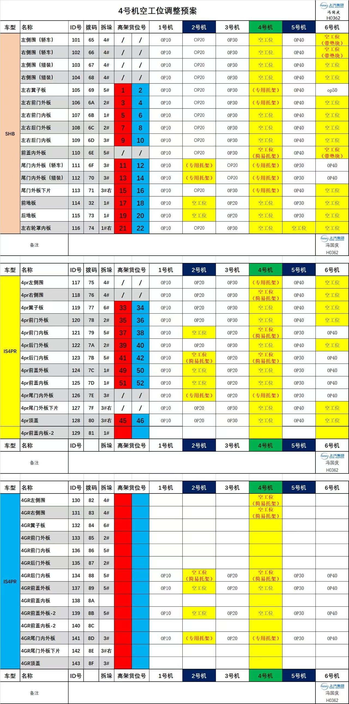

19表怎么读
| 列 | 含义 |
|---|---|
| 车型 | 按车型分组（SHB、4PR 等），同一车型下的零件共用一段工位排布 |
| 名称 / ID 号 | 零件名与内部 ID（如左侧围 101），对零件别只看名字、要认 ID |
| 拨码 | 设备侧的编码号，和上料那张定位卡的右下角编号同一套口径 |
| 拆垛 | 该零件在哪个拆垛手上料（4#、5#…） |
| 高架货位号 | 料垛存放的高架库位 |
| 1～6 号机 | 每个零件在各台压机上走哪道工序（OP10／OP20／OP30／OP40／OP50），空格即该机不参与 |
黄色＝空工位该机位不排这道工序；有的还标了「带垫块／简易托架／专用托架」，指的是空位上要落的工装。
蓝色列＝4 号机与 5 号机4 号机是这张预案的主角，5 号机跟着联动看，换型调工位先盯这两列。
红色数字＝高架货位号左右件常成对（1、2 / 3、4），取料时按这一列找垛位。具体分配口径以车间指令为准。
用法换型前按零件名或 ID 找到那一行 → 看 4 号机那格是空工位还是有工序 → 空位要落哪种托架/垫块 → 再去高架取对应货位。
20预案原表
点图全屏放大；手机上双指缩放看每格小字。表就是标准，本页只做展示与放大，不改字。

共 513 KB · 点开看全尺寸原图